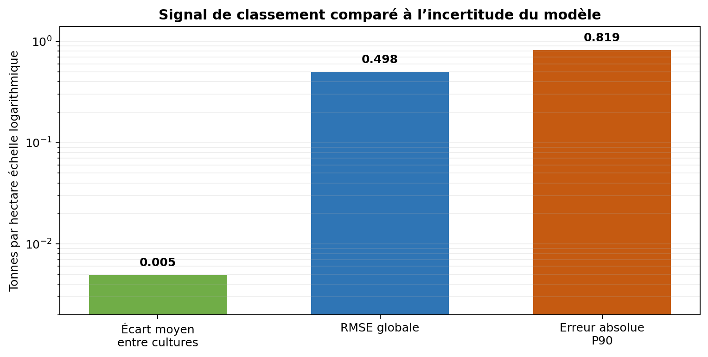

PROJET PHARE2026
AgriTrust
Audit de fiabilité d’un système de recommandation agricole
Un audit de bout en bout d’un produit ML existant : besoin métier, qualité prédictive, comportement par sous-groupes, pertinence du classement et décision de mise en production.
GO LIMITÉPrédiction de rendement
NO-GORecommandation autonome
0,913R² sur le jeu de test
0,498RMSE · t/ha
99 975observations testées
17tests automatisés
